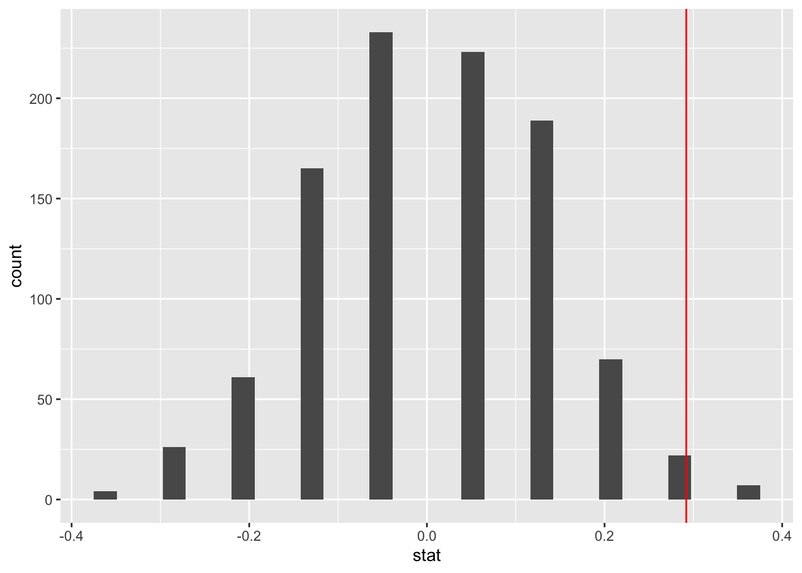
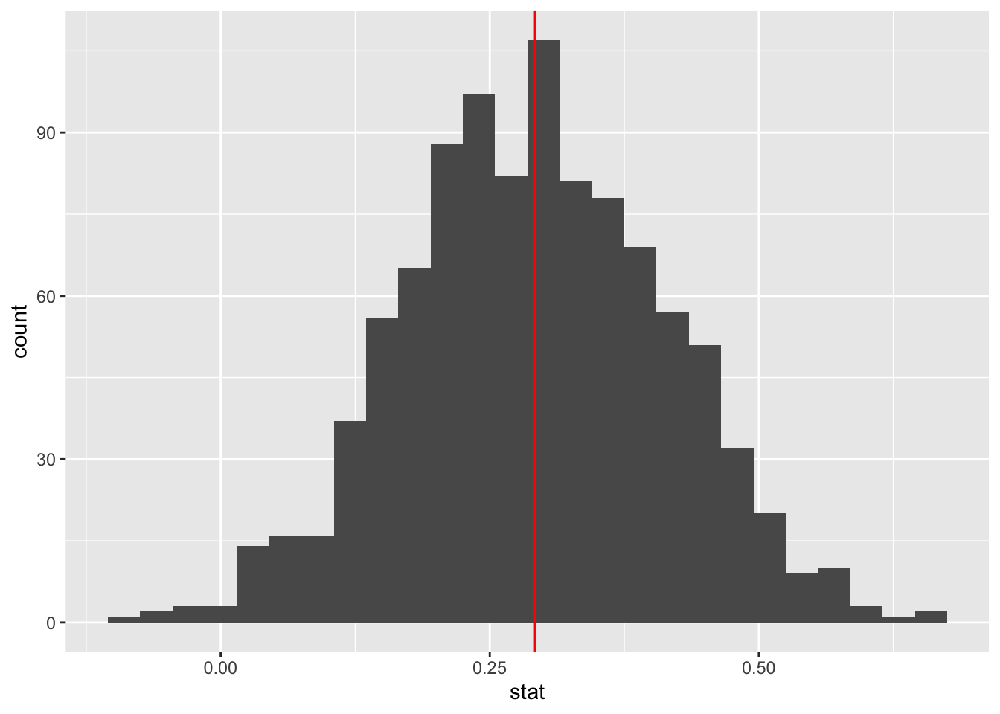
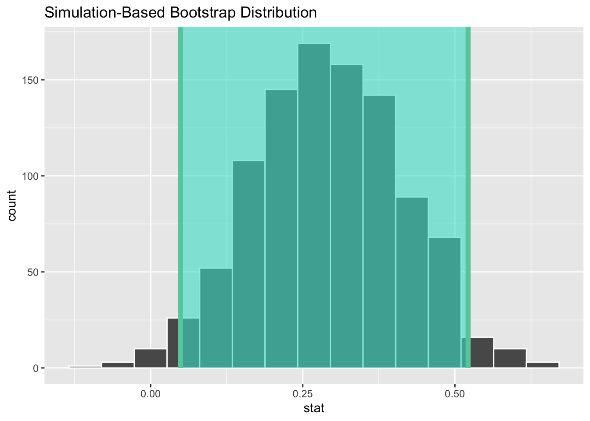

Inference for Difference in two proportions
Lab
Introduction
In Lab 5, we introduced the infer package and performed simulation-based statistical inference for a single proportion. In this lab, we will use the infer package to perform simulation-based inference for a difference in two proportions.
Creating a quarto file
To create your quarto file, follow the following steps:
Go to File>New File > Quarto document. In the title field use Inference for Difference in two proportions then write your name under the
Authorfield. Change the output option toPDF.Next, save the document as
Lab_06. If you did it correctly, the fileLab_06.qmdshould appear under the files section with a.qmdextension.
Packages
In this lab, you will need the following packages: openintro, tidyverse, and infer. Load them into your work space and run them by clicking the green button at the end of the chunk. If you are missing any of the packages, the program will prompt you to install them.
library(openintro)
library(tidyverse)
library(infer)Scenario Description and Data
We consider a study investigating sex discrimination in the 1970s, which is set in the context of personnel decisions within a bank. The research question we hope to answer is, “Are individuals who identify as female discriminated against in promotion decisions made by their managers who identify as male?” (Rosen and Jerdee 1974)
The data set we will use is called sex_discrimination and is contained in the openintro package. The data set contains 48 cases (rows) and two variables (columns). Load the data into your work space:
data(sex_discrimination)Examine the data before you proceed. Verify that it actually has 48 rows (cases) and two columns (variables). To learn more about that data, you can run ?sex_discrimination in the console or double click on the new object in the environment area to view it in an excel-like format.
Hypotheses Statement
The research question of interest here is: “Are individuals who identify as female discriminated against in promotion decisions made by their managers who identify as male?”
The null and alternative hypotheses for the sex discrimination study are as follows:
Null Hyp: There is no discrimination in hiring decisions against individuals who identify as female. In other words, there is no difference in promotion rates (proportions) between male and female candidates.
\[H_0 : p_1-p_2=0\]
Where,
\(p_1\) and \(p_2\) represent the proportion of males and females respectively that were promoted.
Alternative Hyp: The variables sex and decision are not independent. There is a difference in promotion rates between male and female candidates in favor for male ones (i.e., There is discrimination against female candidates in promotion decisions).
\[H_A : p_1-p_2>0\]
Observed Statistic and Data Visualization
An observed statistic in this scenario would be the difference in promotion rates in the data at hand. The statistic of interest here is the difference in proportions between male and female candidates.
We use the observed statistic as an estimate of the true population difference (note that we do not know the true difference in the population). The observed statistic is also called point estimate.
Let us make a grouped bar graph to show the distribution of males and females and the promotion decisions.
It is often useful to have counts on the bars to make your visualization easy to interpret. We can add the geom_text() function as shown below.As usual, play around with the values for the width and the vjust to see what happens.
Code
ggplot(data= sex_discrimination, aes(x=sex, fill=decision)) +
geom_bar(position = "dodge") +
labs(title = "Decision by Sex", x = "Sex", y = "Count") +
scale_fill_manual(values = c("lightblue", "lightpink"),
labels = c("Yes", "No"))+
geom_text(stat='count', aes(label=..count..), position=position_dodge(width=0.9), vjust=-0.2)Let us compute the proportions for the promotions. We can use the count() function to count the cases by sex and decision. After that, we group by sex then make a new column for proportions using mutate. See code below:
Code
sex_discrimination %>%
count(sex, decision) %>%
group_by(sex) %>%
mutate(prop = n/sum(n))# A tibble: 4 × 4
# Groups: sex [2]
sex decision n prop
<fct> <fct> <int> <dbl>
1 male promoted 21 0.875
2 male not promoted 3 0.125
3 female promoted 14 0.583
4 female not promoted 10 0.417Code
# Note that the grouping (predictor) variable is gender, not decision.From this table, we see that,
\[\begin{align} \hat{p}_{diff}&=\hat{p}_1-\hat{p}_{2}\\ &=87.5-58.33\\ &= 0.292 \end{align}\]
Thus, the observed statistic is \(0.292\).
Running Simulations
Next, we use the infer pipeline to run 1,000 simulations as shown below. Be sure to study the code and understand what each step does. I have included notes in the form of comments to help you understand the code.
Code
simulated_diffs <- sex_discrimination %>%
specify(decision ~ sex, success = "promoted") %>%
hypothesize(null = "independence") %>%
generate(reps = 1000, type = "permute") %>%
calculate(stat = "diff in props", order = c("male", "female"))
# specify: The response variable is decision and predictor is sex
# Our "success" level in the case is "promoted".
# Hypothesize: We set null to "independence" (i.e., decision and sex are independent)
# Generate: We generate 1000 samples by permutation/randomization.
# Calculate: The statistic of interest is "diff in props", and we subtract in order of male - femaleRun the above code and study the object simulated_diffs that appears in the environment area. The column titled replicate represents the shuffle number. We have 1,000 shuffles (replicates). The second column (stat) represents the differences computed from each replicate.
Using Infer for Observed Statistic
As an option, you ca use the infer pipeline to compute the observed statistic as shown below. This is a much quicker way to compute the observed statistic.
Code
sex_discrimination %>%
specify(decision ~ sex, success = "promoted") %>%
calculate(stat = "diff in props", order = c("male", "female"))Response: decision (factor)
Explanatory: sex (factor)
# A tibble: 1 × 1
stat
<dbl>
1 0.292Visulaizing the Null Distribution
Next, we want to create a histogram to visualize the distribution of the differences computed above. Remember we stored the differences as simulated_diffs. We will also place a vertical line to visualize the location of the observed statistic (the original difference of 0.292):
Code
ggplot(data=simulated_diffs, aes(x = stat)) +
geom_histogram()+
geom_vline(aes(xintercept = .292), color = "red")`stat_bin()` using `bins = 30`. Pick better value with `binwidth`.
Getting the P-Value
The P-value is the percent of scores that are at or beyond the observed statistic (i.e., the red line). It is the probability of observing a difference as extreme as 0.292 assuming that the null hypothesis is true (i.e., that there is no discrimination going on). The infer package comes with a function known as get-p-value() for computing the p-value from the null distribution (i.e., our simulated_diffs). See code below:
Code
simulated_diffs %>%
get_p_value(obs_stat = 0.292, direction = "greater")# A tibble: 1 × 1
p_value
<dbl>
1 0.006Code
# The argument obs_stat is for the observed statistic.
# The argument direction is for the kind of hyp test (in this case right-tailed)The conclusion in Contex
The whole point of doing this is to answer the question, “Is there discrimination going on against female applicants?”. Now, with a P-value as small as we have, it means that if there was no discrimination going on we would would expect to see a difference of 0.292 about 3% of the time. As you would agree, this is a very rare observation hence the results are statistically discernible. This means that the data provides strong evidence against the null hypothesis. We can conclude that discrimination is likely going on against female candidates.
It is common to use a cut off point of 5% to decide whether the null hypothesis is likely false. The cut off point used is often called a discernibility level. This is the value used in many parts of the text.
Creating a Confidence Interval
The hypothesis test tells us whether there is discrimination going on or not. It does not tell us anything about the magnitude (the difference in proportions) of the discrimination in the population. To estimate the magnitude of this difference, we create confidence interval, i.e., a range of values within which we expect to find the true difference in promotion rates (i.e., \(p_1-p_2\)). In most cases, we run both hypotheses tests and confidence intervals because the two compliment each other.
Below is the process for creating the confidence interval:
Find the Observed statistic
Just like in the hypothesis test case, we need to find the observed statistic first. We can use infer to do this. Notice that we are skipping the hypothesis and generate steps. We are also saving the observed statistic as d_hat.
Generate the Bootstrap Distribution
Next, we generate the bootstrap distribution. This is not the same as the null distribution found earlier. Bootstrap samples are generated by taking multiple samples from the sample (resampling) with replacement. We will generate 1,000 samples in this case. See code below:
Code
boot_dist <- sex_discrimination %>%
specify(decision ~ sex, success = "promoted") %>%
generate(reps = 1000, type = "bootstrap") %>%
calculate(stat = "diff in props", order = c("male", "female"))Once you run the bootstrap samples, click to view the data. You have a list of 1000 differences generated via bootstrapping. Notice that we skipped the hypothesis step in the infer pipeline because this is not a hypothesis test.
Visualize the Bootstrap Distribution
Next, you can create a histogram distribution of this distribution. Notice that it is centered around 0.292. This should not come as a surprise.
Code
ggplot(data=boot_dist, aes(x = stat)) +
geom_histogram(binwidth = .03)+
geom_vline(aes(xintercept = .292), color = "red")
Getting the Confidence Interval
The function get_ci is used to create the confidence interval once you have generated the bootstrap distribution. By default, function creates a 95% confidence interval. This gives you the middle 95% of the data (in this case the simulated differences). The interval is built around the observed statistic.
Code
percentile_ci <- get_ci(boot_dist)
print(percentile_ci)# A tibble: 1 × 2
lower_ci upper_ci
<dbl> <dbl>
1 0.0635 0.546Below is a way to use the built-in infer function to visualize the interval:
Code
visualize(boot_dist) +
shade_confidence_interval(endpoints = percentile_ci)
Interpreting the Confidence Interval
We interpret the interval as follows: We are 95% confident that the true difference in promotion rates between male and female applicants is between 0.06 and 0.53 (or 6% and 53%).
Notice that the interval we found does not include 0. This means that 0 is not a viable value. We had also rejected null hypothesis and so the results of the confidence interval and the null hypothesis are in agreement.
Exercises
Research Question: How rational and consistent is the behavior of the typical American college student?
One-hundred and fifty students were recruited in a study that aimed to understand whether reminding college students about saving money for later would make them more thriftier. The students were split into 2 equal groups (control and experiment) and were asked to respond to the following prompt:
“Imagine that you have been saving some extra money on the side to make some purchases, and on your most recent visit to the video store you come across a special sale on a new video. This video is one with your favorite actor or actress, and your favorite type of movie (such as a comedy, drama, thriller, etc.). This particular video that you are considering is one you have been thinking about buying for a long time. It is available for a special sale price of $14.99. What would you do in this situation? Buy video or Not buy video?”
The data set for this study is available in the openintro package and is called opportunity_cost. Load all required packages (openintro, infer, and, tidyverse) and then load the data into your work space. As usual, you want to explore the data before you start your analyses.
Recommended reading: Section 11.2 of the course text.
(2 pts) State the hypotheses (null and alternative) in words and in symbols.
(2 pts) Create a dodged bar graph to visualize the data. Be sure to show the frequencies on the bars.
(2 pts) Use the
countandgroup_byfunctions to create a summary table summarizing the results. Compute the observed statistic.-
In this problem, you will run a simulation-based hypothesis test to test the null hypothesis that you stated in exercise 1 above.
(4 pts) Use the infer package to run 1000 simulations for the hypothesis test. Save the simulations as simulated_data.
(2 pts) Create a histogram to visualize the distribution of the simulated_data. Include a vertical line showing the location of the observed statistic.
(2 pts) Use the
get_p_valuefunction to find the P-value. Based on this P-value and a significance level of 0.05, write a conclusion for your hypothesis test in context.
(6 pts) Create a confidence interval to estimate the parameter of interest. Write an interpretation of your interval and state whether it agrees with the results of your hypothesis test.